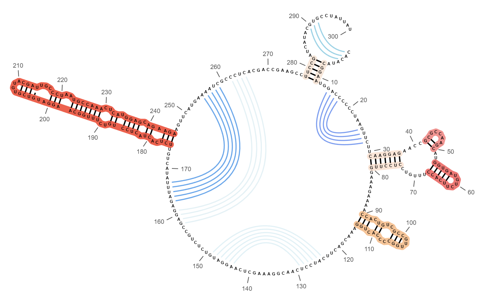
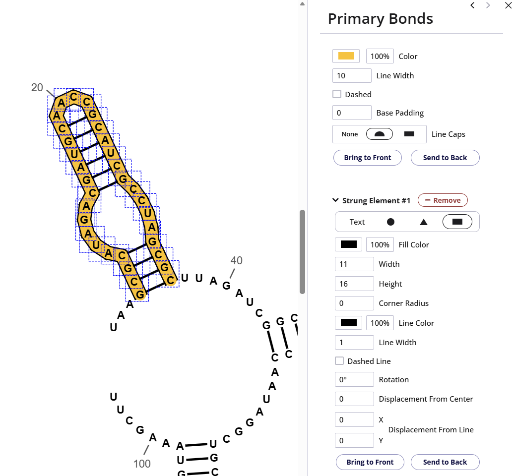
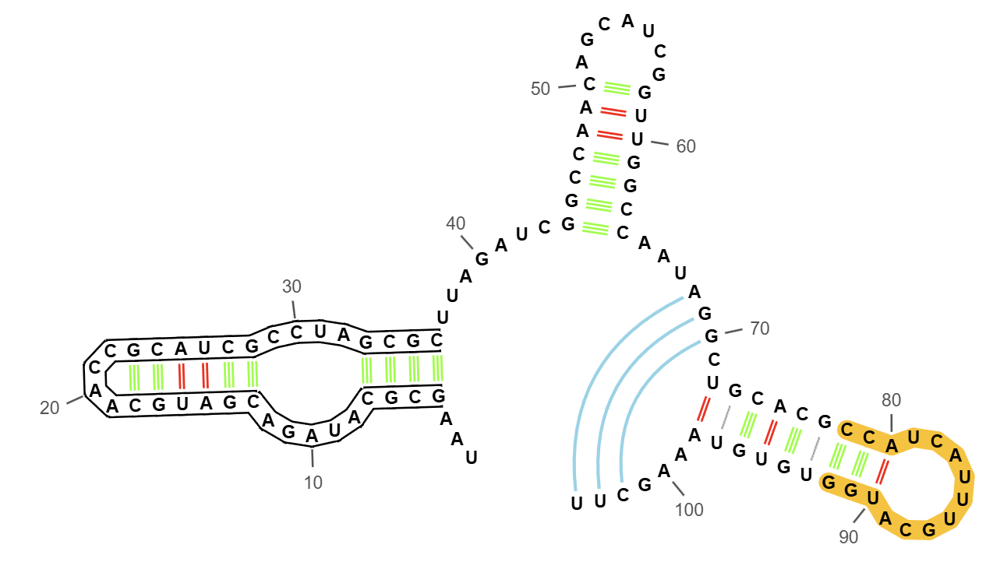

前言
RNA canvas 是一款基于纯前端的 RNA 二级结构绘制工具，我们只需要点括号标记语言和具体的序列，他就会自动绘制。
这个网站已经集成到资源站中的集合列表中，点击 RNA canvas 即可启动。
结构
在 RNA canvas 中，元素被分了五个层级，分别是碱基、一级结构、二级结构、三级结构和数字，我们用一幅图展示，顺便也当作效果示例：

- 碱基：就是 ATCG。
- 一级结构：磷酸二酯键。
- 二级结构：氢键，这里的氢键被表达在点括号文本里，因此能被直接绘制出来。
- 三级结构：弱氢键，指概率上较低会形成的氢键，我们需要手动绘制，在图中用蓝色/白色连线表示。
- 数字：用于调整数字的表现。
工具层次
这个网站的工具逻辑做的太奇怪了，在这里进行一下说明。
以下是5个一级工具：
- Drag：拖动。
- Pair：配对。
- Flatten：弄平。
- Flip：翻动。
- Edit：编辑。
Drag
我们可以使用这个工具进行结构整体或部分旋转，需要整体旋转时，拖动第一个碱基或者最后一个碱基就可以旋转了。它的次级选项 Only Expand 我也不太清楚干什么的。
Pair
选取碱基后放开，再选取另一部分，单击即可将它们手动形成二级结构，按住 Shift 单击即可创建三级结构。Show Complements 用来自动展示和你所选配对的碱基，options 用于调整自动展示细致的参数，允许非 100% 配对。
Flatten
弄平就是吧自动绘制弯曲的地方变成直线。
Flip
就是把一部分结构翻折过来。
Edit
下设五个子选项，刚好就是五个层级：碱基、一级二级三级结构和数字，当你选择具体的子选项时，在画布上拖动就可以框选对应的元素并在右栏进行进一步设置。
碱基
选取碱基可以设置乱起八糟的东西，在这里不过多赘述。
一级结构
示范图中的碱基底部连线就是通过设计一级结构画出来的：框选要画取的一级结构键-设置颜色-调整线宽覆盖碱基-调小 Base Padding -设置圆头连线-send to back 到碱基底部显示。
二级结构
同样的，在二级结构选项下框选元素，也可以进行好的设置。网站也预制了选择 AT 碱基或 CG 碱基等等。
三级结构
三级结构主要通过一级 Pair 工具进行绘制，用于描绘低概率存在的低氢键。
在理解 RNA 的二级结构时，一定要基于概率学层面，而不是仅单一追求热力学最优解。
绘画技巧
描边处理
想要做出这种描边效果，不妨试一下这样的设置：

其中黄色底为一级结构本身的设置，而描边是通过给一级结构加一个矩形元素，略微调大线宽（一级结构本身10，新增元素为11），适当调整高度，使圆角处刚好相连接，直线处会自己重合，再把它 send to back 送到低端就可以了！
示例文件
可以下载这个工程文件详细浏览绘图参数等：
